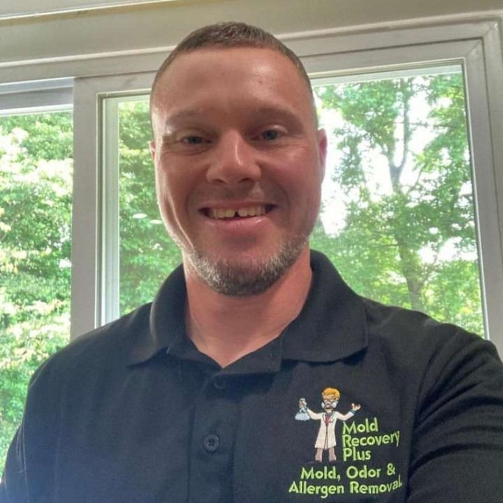

Get to know Mold Recovery Plus, our owner Matt Jarnis, and why homeowners across Burlington, Mercer, and Camden Counties trust our certified, local approach.

"My name is Matt Jarnis and I am an IICRC and PMII certified technician and the owner/operator of Mold Recovery Plus. I've been in the cleaning and restoration business for well over 10 years."
"I get the unique opportunity to help families back to safety when they're in a situation that can be fearful and overwhelming. Over the years I have prided myself on completing every job with the family or individual whose home has been affected safety in mind."
"I stay up to date on my knowledge of new cutting-edge technology and products that provide a safer and more cost-effective resolution for my clients. I strive to ensure a clean, safe, mold and odor free environment for my customers."
Whether you are in need of a free in-home visual mold inspection, a guaranteed odor removal, mold remediation, allergen eradication, or microbial testing, you only have to make one call: Mold Recovery Plus.
Watch our featured video explaining the Mold Recovery Plus remediation philosophy and practical approach.

In this video, see our remediation standards firsthand: proper negative-air containment, non-toxic sanitizing fogging, and protective sealers that safeguard your investment.
Verified reasons why property managers, realtors, and homeowners recommend Mold Recovery Plus:
When you call Mold Recovery Plus, you don't get routed through a remote call center. You communicate directly with Matt Jarnis. He conducts the assessments, oversees the crews, and stands behind the work personally.
We use environmentally friendly processes and chlorine dioxide for our odor and mold treatments. Chlorine dioxide oxidizes cellular walls without leaving persistent synthetic toxins on surfaces.
Many restoration franchises quote astronomical prices to capitalize on panic. If you present us with a competitor's quote for the same service, we guarantee that we'll beat or match it.
Mold Recovery Plus maintains full liability coverage and state bonding. We hold credentials from the Institute of Inspection, Cleaning and Restoration Certification (IICRC) and the Professional Mold Inspection Institute (PMII).
While other companies avoid difficult tight spaces or charge punitive surcharges, attics and crawlspaces are our forte. We remediate structural framing and seal foundation block walls thoroughly.
We assist property owners through insurance documentation for covered water damage losses, providing moisture reading charts and lab reports that adjusters require.
"First off, a great man. Well spoken, polite, and very detail oriented. Came right on time as scheduled. Explained everything he was going to do, as well as explain what every process was actually doing. Also took his time to make sure the job was done thorough. Last thing: gave me a very good price. Better than a few other people I spoke with."
"Matt is very professional and great in his work. He came to the house, provided the estimate and explained everything to us. Very reasonable. He is punctual and kept updating us with the status of the job. We were very happy how the work was performed. He removed all mold."